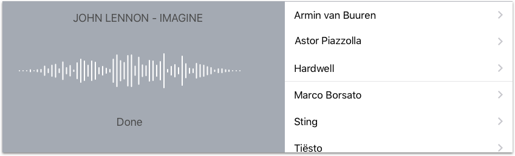

Het maken van een prototype (visueel ‘werkende’ versie van een app maken) is een uitstekende manier om potentiële gebruikers te laten zien wat jouw app voor hun eigen idee of organisatie kan betekenen. Een prototype blijkt tijdens de ontwikkeling van apps ook een leerzaam stuk gereedschap. Aan de hand van zo’n ‘werkend’ prototype kun je potentiële gebruikers vragen stellen over de functionaliteit en hen de algehele bedienbaarheid van jouw 'voorbeeld app' laten ervaren. Zo groei je samen toe naar een app waar iedereen blij van wordt én gebruikers optimaal tevreden zijn.
Overmoedigheid als wederzijdse valkuil!!
Prototypes van apps kunnen voor het oog van leken soms zo mooi zijn en echt lijken dat zij (vaak potentiële opdrachtgevers!) denken dat deze app al ‘bijna’ af zijn en daardoor voor een prikkie te koop zijn. Voor zowel app-ontwikkelaars en hun opdrachtgevers vormt deze gedachte een serieuze valkuil.
Echt succesvolle, goedwerkende apps ontwikkelen vraagt om specifieke kennis en kunde die niemand direct paraat heeft. Er zijn vaak vele uren onderzoek met echte gebruikers nodig om apps die functionaliteit en het gebruiksgemak te geven die later optimaal tevreden gebruikers opleveren. In bijna alle gevallen zijn er minstens evenveel uren noeste programmeerarbeid nodig om deze voorbeeld-apps ook in de echte wereld voor gebruikers én opdrachtgevers te laten werken. N.B.: Prototypen kunnen ook gebouwd worden om alléén als interactieve brochure te fungeren.
Waarom werkt het prototype nog niet als een echte app?
Omdat het een voorbeeld van een in ontwikkeling zijnde app is en afbeeldingen en data binnen het prototype statisch zijn. Prototypen missen nog rekenkracht of intelligentie voor het ophalen van gegevens, etc. Prototypen missen eigenlijk alles wat elke app tot een echt waardevolle app maakt. Toch heeft een prototype een belangrijke functie bij het ontwikkelen van succesvolle apps. Omdat alleen zeer tevreden gebruikers hun app vaak én over een lange periode enthousiast zullen gebruiken. Hun tevredenheid heeft een groot effect op het duurzame gebruik van apps, het installeren van updates of het doen van in-app aankopen. Een echt doordachte én goed functionerende app laat ieders kassa rinkelen. Als je via het maken van prototypen deze status kunt bereiken ben je spekkoper.
Een ontwerpstudie in klei van een auto of een maquette van een gebouw zijn ook niet 1,2,3 omgetoverd tot een perfect rijdende bolide of een pand waar je zo in kan trekken. Wees naar potentiële opdrachtgevers zonneklaar dat een prototype niet meer is dan een ‘proof of concept’. Zorg ervoor dat jouw prototype door iedere (potentiële) opdrachtgever en potentiële gebruiker gezien wordt als een zéér waardevol discussiestuk. Jouw enige doel: waardevolle, goed werkende apps afleveren waar gebruikers méér dan blij mee zijn. Zo zijn prototypes uitermate zinvol als een zo realistisch mogelijke testomgeving. Omdat gebruikers er mee kunnen spelen, hun ervaringen in opvolgende, verbeterde versies optimaal kunnen testen en zij waar nodig relevante verbeterpunten kunnen aandragen. Spreekwoordelijk zijn serieuze app-ontwikkelaars en testende gebruikers hun gewicht in goud waard. Houd deze valkuil scherp in de gaten, anders kan het voor beide partijen een weliswaar leerzame, maar ook hele dure les blijken.
Wat is jouw voordeel als app-ontwikkelaar?
Prototypes voor apps maken is dus een leuke, leerzame maar ook tijdrovende bezigheid. Eerlijk gezegd, het maken van prototypes biedt talloze voordelen. Als het gaat om het samen met gebruikers ontdekken van een optimale gebruikerservaring, bijvoorbeeld. Het geeft je door deze hulp van gebruikers zicht op hoofd- en bijzaken. Verstandig versimpelde apps worden door gebruikers veel vaker gebruikt. Een prototype is van onschatbare waarde om te leren wat gebruikers in de app als goed en fijn ervaren en wat zij echt van de app verwachten. Dit levert (na de definitieve ontwikkeling tot een optimaal werkende app) tevreden gebruikers (én opdrachtgevers!) op.
Een "plaatje" van een app
Een aansprekend visueel prototype maken kan op een aantal manieren. Dit kan in eerste instantie heel goed met pen en papier. In een volgend stadium kunnen apps die voor het maken van prototypen speciaal ontwikkeld zijn hun diensten bewijzen. Deze programma’s combineren vele grafische ontwerp-mogelijkheden en handigheidjes om binnen niet al te lange tijd een aantrekkelijk visueel beeld van een toekomstige app te kunnen tonen. Omdat deze programma’s over sjablonen met ontwerpelementen voor iPhone, iPad, Android en websites beschikken kun je alle visuele elementen in elke toepassing perfect op elkaar afstemmen.
Digitale prototypes versnellen niet alleen de ontwerp-fase. Zij bieden ook veel gemak wanneer je achteraf aanpassingen moet doorvoeren aan de hand van een feedbackgesprek met je opdrachtgever(s) of na het evalueren van de ervaringen van testende gebruikers. Deze programma’s zijn ook zeer geschikt om plaatjes voor meerdere apparaten op maat te maken, tekstlengte van meerdere vreemde talen vooraf te controleren, passende iconen te ontwerpen, vanuit één kleurenpalet te werken, etc.
Wil je meer over het maken van digitale prototypes weten? Kijk dan eens naar het geesteskind van de zeer ervaren Nederlandse ontwikkelaar Pieter Omvlee van BohemianCoding. Hun Mac app Sketch is van alle gemakken voorzien als het gaat om het ontwerpen en tonen van visuele gebruikersomgevingen voor meerdere schermgroottes én platformen. Om hun collega-ontwikkelaars en UX ontwerpers op weg te helpen hebben zij Sketch voorzien van sjablonen met alle standaard UI elementen om direct aan de slag te kunnen. Met het UI-sjabloon en je eigen getekende ontwerp naast elkaar maak je op je Mac een volledig nog aanpasbaar iPhone of Android ontwerp. Dit ontwerp kun je via hun mobiele app iOSMirror direct op je eigen apparaat bekijken en later ook aan anderen tonen.
Prototypes maken in Xcode?
Aan een voor de hand liggende oplossing om interactieve prototypes te bouwen gaan veel ontwikkelaars vreemd genoeg voorbij: Storyboards in XCode. Vooral als het alleen om prototypes voor iOS, MacOS, tvOS en watchOS gaat, sla je twee vliegen in één klap. Je verrijkt niet alleen je bestaande kennis en vaardigheden om interactieve storyboards te bouwen. Een bijkomend voordeel is dat je gaandeweg ook een tijdbesparende bibliotheek aan interactieve storyboards opbouwt. Opgeslagen storyboards kun je later gemakkelijk hergebruiken en aanpassen waardoor het je steeds minder moeite kost om een werkend prototype samen te stellen. Als je het echt in de vingers krijgt, kun je ervoor kiezen om samen met gebruikers het ontwerp 'in levende lijve' te bouwen.
Als een stapsgewijze gebruikerstest het optimale app-ontwerp heeft opgeleverd, liggen ontwerp en werking in Xcode al definitief vast. Ondanks dat er geen letter is geprogrammeerd, ziet het resultaat er al levensecht uit. Nu kan het programmeren beginnen, zodat de app ook een brein krijgt en binnenkort hopelijk een grote schare tevreden gebruikers kent.
Waar moeten app-ontwikkelaars op letten?
Gebruik deze programma’s en gereedschappen als Xcode nooit om in één keer je hele app “vast te leggen”. Ontwikkel vanuit je (eigen) app-idee, briefing of programma van eisen (wat de app precies moet doen) een effectief én visueel aantrekkelijk prototype. Dit prototype ga je in de praktijk bij potentiële gebruikers toetsen. Wat blijkt vaak: het moet anders! Gebruikers hebben andere inzichten, app is te complex, te traag, onderliggende processen sluiten niet aan, enz, enz. Let ook goed op de samenstelling van het test-team. Ervaren app-gebruikers hebben andere inzichten en ervaringen dan beginnende app-gebruikers. Overschat nooit de kennis en ervaring die gebruikers van hun eigen mobiele telefoon, tablet of computer hebben. Vaak ontbreekt het hen aan basale kennis die voor jouw app strikt noodzakelijk kan zijn. Een illustratief voorbeeld is Force Touch op de nieuwste iPhone6S(Plus). Een hele handige functie die menig gebruiker -geheel onbedoeld- in de war heeft gebracht. Dus: mooie plaatjes alleen vullen geen gaatjes!
Wil je meer over het maken van een prototype weten? Neem dan een serieus kijkje op de website van Sketch van BohemianCoding of kijk op de developer website van Apple: Tips over prototypen van Apple's interne experts. Heb je al veel ervaring met Storyboards is Xcode een interactief alternatief.